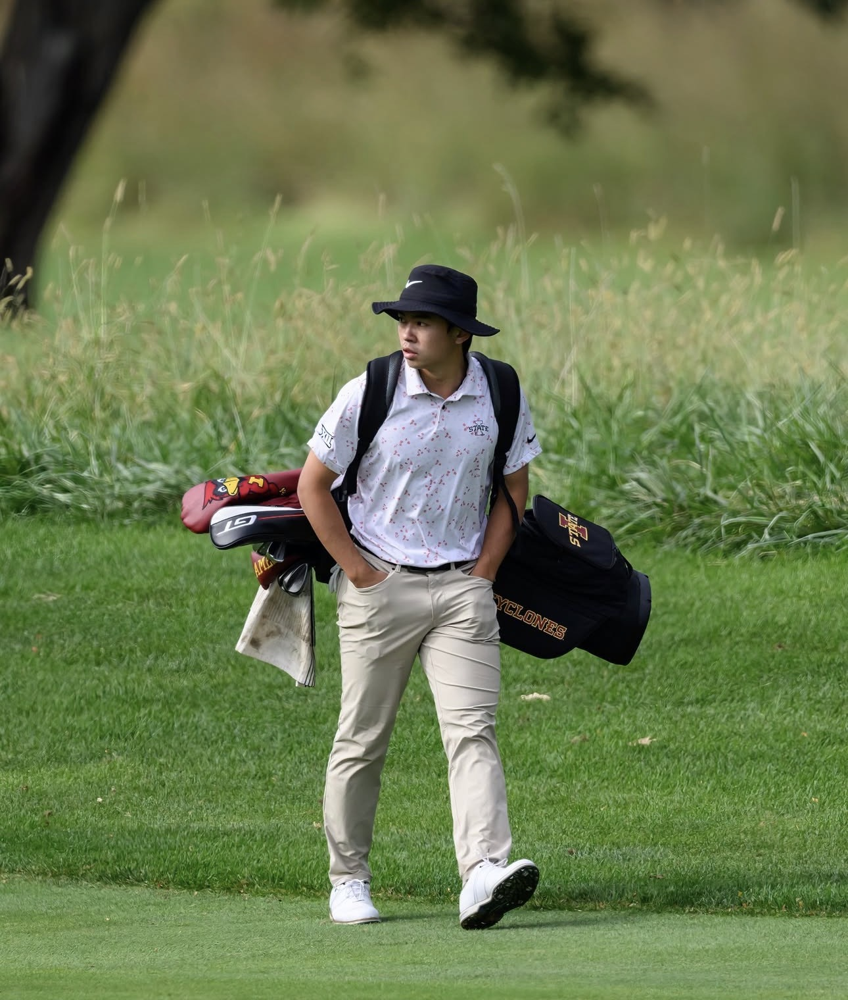

I am a student-athlete on the Iowa State golf team.

My golf development emphasizes both technical performance and long-term competitive growth. I am especially interested in training structure, shot quality, and the relationship between preparation and tournament execution.
Golf has shaped the way I think about discipline, efficiency, and consistency. It remains an important part of how I approach both competition and academic work.